Cargo Enhancements
The industry and town windows draw arrows to every industry and town that could supply or take their cargos, all at once. This mod filters them by cargo, distance and who actually produces, adds distances to the tables, gives warehouses the same view, and plans whole supply chains from the raw producers to the towns.
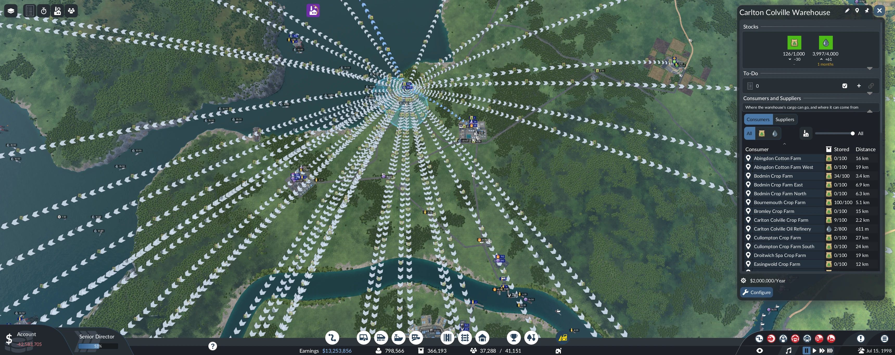
In the game, expanding an industry's Input Stocks or Output Stocks card, or opening a town's Supplies tab, draws cargo flow arrows on the map to every possible supplier or consumer and lists them in a table below. The filters here work on both at once: pick a cargo or set a distance, and the arrows and the rows follow.
Industry window
Cargo Filter
Setting: Cargo Filter · On by defaultWellington Canning Factory takes fish or meat, and steel. Its Input Stocks card is expanded.
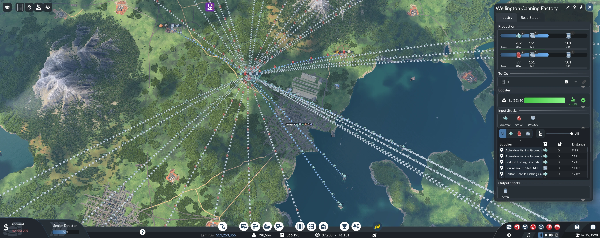
- 1Arrows to every fishing ground, livestock farm and steel mill that could supply the factory.
- 2All: the game's view.
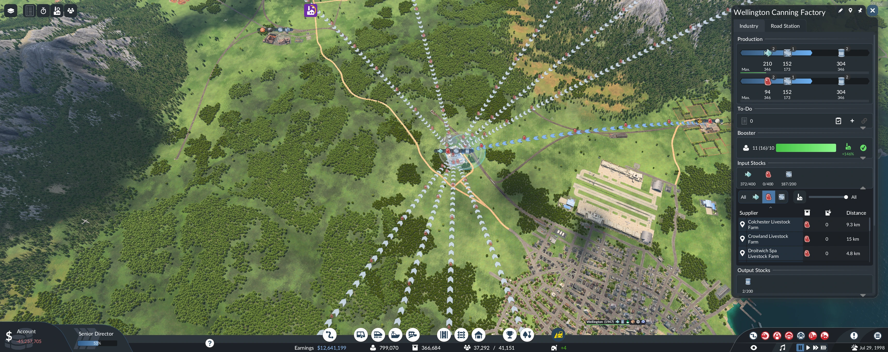
- 1Meat picked: the table lists only livestock farms.
- 2Only meat's arrows are left, one to each livestock farm that could supply it.
Why
Expanding an industry's Input Stocks or Output Stocks card draws arrows to every industry and town that could supply or take any of its cargos, and lists them all in one table. For a canning factory that is every fishing ground, livestock farm and steel mill around.
What it does
Cargo buttons above the table of an expanded Input Stocks or Output Stocks card: All, as in the game, and one button per cargo. Pick a cargo to keep only its arrows and table rows: the industries and towns that can supply it to this industry, or take it from it.
Good to know
- The choice is kept per industry for the session.
- A card with a single cargo has no buttons, since there is nothing to pick; the other filters still show.
Booster Sources
Setting: Booster Sources · On by default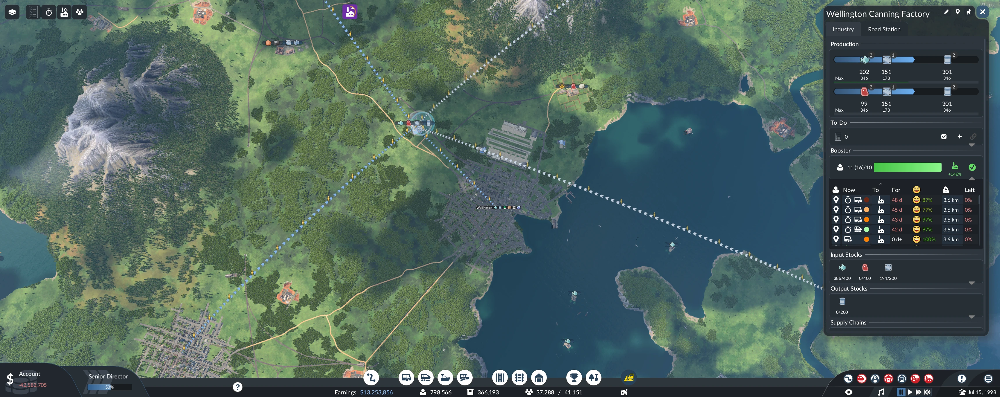
- 1Blue arrows: towns that send workers here now.
- 2White arrows: nearby towns that could send workers but don't now.
- 3The expanded Boosters card: the arrows show while it is open.
- 4Industry EnhancementsThe worker list: what each worker is doing now, and for how long.
Why
The worker boost needs workers who come by your lines, but the industry window doesn't show which towns they could come from. The game draws arrows from nearby towns only for a worker subsidy.
What it does
Expanding an industry's Boosters card draws arrows from the towns its workers can come from: the closest towns, the ones a worker subsidy shows, and any town that sends workers now, within the distance limit. An arrow moves only while its town sends workers; a still, white arrow is a town that could.
Good to know
- A booster cargo, such as tools, is an input: its suppliers are in the Input Stocks card.
Town and warehouse windows
Town Supply Filter
Setting: Town Supply Filter · On by defaultWellington's Supplies tab in the Suppliers view, with the game's town supplies data layer on.
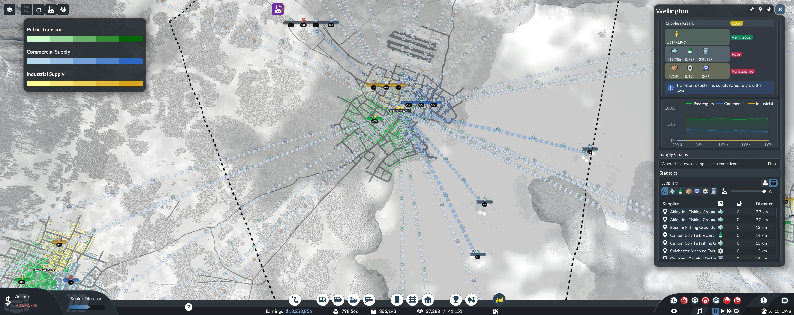
- 1All: arrows to every possible supplier of every cargo Wellington needs.
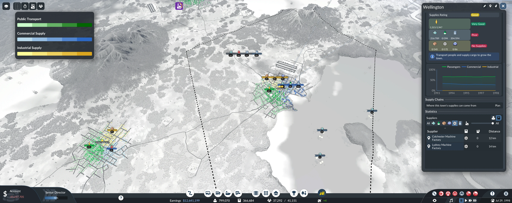
- 1Machines picked.
- 2Wellington gets no machines: 0 of 172, rated No Supplies.
- 3Two machine factories could supply them, 12 and 14 km away. Their arrows run off the top of the picture.
Why
A town's Supplies tab rates each cargo the town needs. Its Suppliers view draws arrows to every industry that could supply any of them, all at once, so the one cargo that is short is hard to follow.
What it does
The Suppliers view gets the filter row: pick a cargo the town needs to see only where it can come from, on the map and in the table. The distance slider, the Producing toggle and the Distance column work here too.
How to use
- Open a town and its Supplies tab.
- Switch to the Suppliers view and pick a cargo.
Warehouse Consumers and Suppliers
Setting: Warehouse Consumers and Suppliers · On by default
- 1Consumers: where the stored cargo can go. Suppliers: where more of it can come from.
- 2Crude oil picked: the oil refineries that could take it.
- 3Carlton Colville Oil Refinery is 611 m away and holds none of its 800.
- 4Stored: Haywards Heath Oil Refinery already holds 792 of 800.
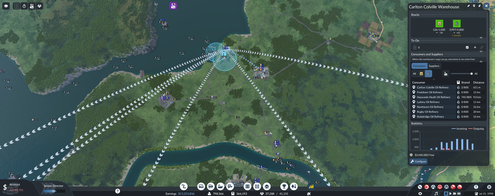
- 1Crude oil picked in the card.
- 2Arrows to the seven oil refineries that could take its crude oil, from 611 m to 20 km away.
Why
A warehouse window shows what is stored, but nothing about who could take it or bring more. Warehouses get no cargo flow view in the game.
What it does
A Consumers and Suppliers card in the warehouse window. Expanded, it shows where the stored cargo can go (Consumers) or come from (Suppliers), as arrows on the map and as a table, with the same filters as the industry window.
Good to know
- The Stored column shows what each industry already holds of the cargo: a consumer's input stock, a supplier's output stock. Sort by it to see who has it and who doesn't.
- Towns show a dash under Stored.
Filters and tables in all three windows
Distance Slider
Setting: Distance Slider · On by defaultWellington Canning Factory's fish suppliers.
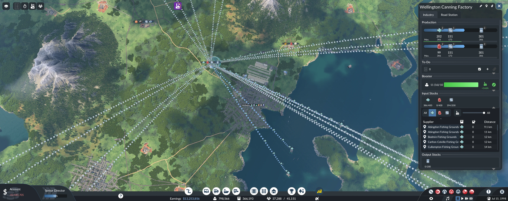
- 1The slider at All: every fishing ground on the map.
- 2Many arrows lead to fishing grounds 10 km and more away.
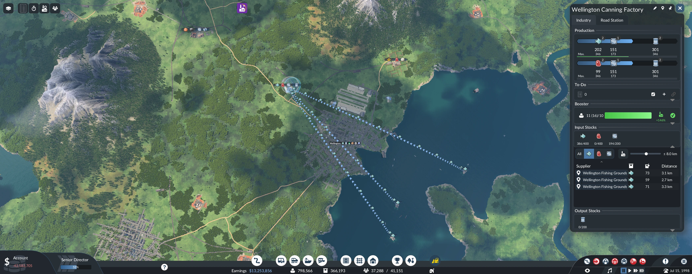
- 1The slider set to 8.0 km.
- 2Three Wellington Fishing Grounds are left, 2.7 to 3.3 km away.
- 3Only their arrows remain.
Why
The arrows reach across the whole map, while a first supply chain usually starts with the industries close by. In a long table those are easy to miss.
What it does
A slider in the filter row hides suppliers and consumers farther away than the distance it shows, both their arrows and their table rows. At the right end it reads All and hides nothing.
Good to know
- One limit for every window, kept for the session. The Supply Chain Planner uses it too.
- Distances are straight lines, not the length of a route.
Producing Filter
Setting: Producing Filter · On by defaultWellington's Supplies tab, Suppliers view, cans picked.
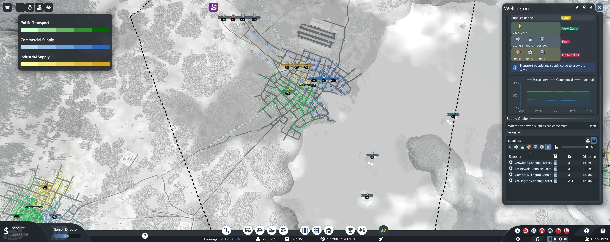
- 1Producing off: all four canning factories that could supply cans. Three made none last year.
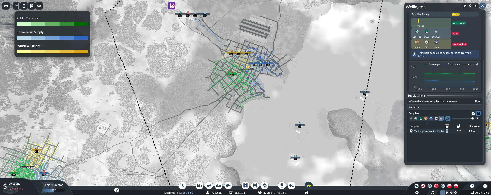
- 1Producing on: only Wellington Canning Factory is left, 1.4 km away.
Why
The supplier lists include every industry that could make a cargo, also the ones that made none last year because no line serves them. Four canning factories could supply a town with cans, but only one is making any.
What it does
A Producing toggle (the factory icon) in the filter row. In the supplier filters it hides suppliers that produced none of the cargo in the last year. In the consumer filters (an industry's Output Stocks, a warehouse's Consumers) it hides consumer industries that produced nothing in the last year or threw almost all of it away; towns stay.
Good to know
- A mine nobody serves keeps producing into its full stock, which throws it all away, so as a consumer it counts as not producing. A booster such as tools then goes only where the extra production is used.
- Raw producers such as farms and mines always make something, so the toggle matters most for processed cargo such as cans.
Distance Column
Setting: Distance Column · On by default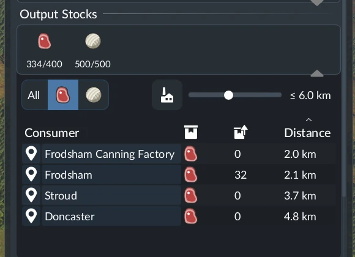
- 1Distance to each taker of meat. One click on the header sorted it nearest first: Frodsham Canning Factory, 2.0 km.
- 2With the slider at 6.0 km, only the four takers within reach are listed.
Why
The game's supplier and consumer tables give names and amounts, but not how far away each one is. A neighbour and a town at the far end of the map look the same.
What it does
A Distance column in the supplier and consumer tables of the industry, town and warehouse windows: the straight-line distance to the other industry or town. Sort by it to put the nearest first.
Table Sort
Setting: Table Sort · On by defaultWhy
In the game, the first click on a column sorts it smallest first, so the busiest suppliers end up at the bottom, and a sort can leave the table scrolled part way down.
What it does
In the supplier and consumer tables, the first click on a header sorts amounts largest first, names A to Z and distances nearest first; a second click flips it. Every sort shows the table from its first row.
Good to know
- The sort is kept per table for the session.
Supply Chain Planner
Supply Chain Planner
Setting: Supply Chain Planner · On by default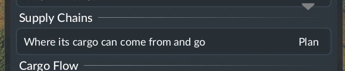
- 1Plan opens the planner on this industry.

- 1The industry you plan for, in the middle, at 59 % of its maximum production. Grain is marked Limiting: its stock is empty.
- 2Who makes grain, nearest first. The picked supplier is blue, with your line that serves it in green.
- 3Raw producers show their plots: 8 of 20 built here, and 85 a year once all are built.
- 4Who takes the meat: the town of Frodsham, 2.1 km away, is picked and already served by your line.
- 5The planned legs with distance, lines and balance, and a summary of what holds the chain back.
Why
Building a supply chain means working backwards from a town or a factory: who makes each input, how far away, how much they can send, and what those suppliers need in turn. The game answers that one window at a time.
What it does
A Supply Chains card in the town and industry windows. Its Plan button opens a large planning window that, like the statistics window, shrinks to a strip above the game bar.
The town or industry you plan for sits where it belongs in its chain: a raw producer at the left, a town at the right, a factory in the middle with its suppliers to the left and its consumers to the right. Its card shows how much of its maximum it produces and how full its input and output stocks are, and marks an input that holds production back. Each step lists the nearest industries and towns that make or take the cargos you plan, within the distance limit, with your lines that serve each leg. Below, the planned chain is listed leg by leg with distance, lines and balance, and it can be drawn on the map as arrows.
How to use
- Open a town or an industry and click Plan on its Supply Chains card.
- Pick the cargos to plan, then the industries and towns you want in each step.
- Use a row's focus button to plan around that industry or town instead.
- Show on Map draws the planned chain as arrows.
Good to know
- A plan opens filled with the chain already moving cargo. Existing fills it in again; Reset empties a step.
- Nearest 3, 5 or 10 sets how many rows a step lists; 0 lists only what you picked, an overview of the plan.
- Pick several suppliers for one input and its need is shared over them, nearest first. Each card's bar shows where the need is met.
- Raw producers show their plots and their chance to grow. A chain stops one step past a booster.
- The ? button explains the colours. Plans are kept for the session.
Supply Chain Planner Button
Setting: Supply Chain Planner Button · On by defaultWhy
The planner covers the map, so you close it to build. Opening it again from the town or industry window takes a few clicks.
What it does
A button beside the Data Layers button at the top left opens and closes the planner, back on the town or industry you last planned for, with its plan as you left it. Before anything is planned it opens empty: pick a town or an industry in its toolbar.
Good to know
- Needs the Supply Chain Planner setting on.
Settings
Choosing a save's mods: the gear next to Cargo Enhancements → Settings. Each save keeps its own choice. Off turns a feature off completely.
| Setting | Default | What it does |
|---|---|---|
| Cargo Filter | On | Cargo buttons in the industry window's Input / Output Stocks cards show the arrows and table rows of one cargo. |
| Town Supply Filter | On | Cargo buttons in the town window's Supplies > Suppliers view show where one supply can come from. |
| Producing Filter | On | 'Producing' toggle (a factory icon) in the supplier and consumer filters that hides suppliers which produced none of the cargo, and consumer industries that produced nothing or threw almost all of it away, in the last year (e.g. to send a booster only where it helps). |
| Distance Slider | On | Slider in the industry, town and warehouse filters that hides farther suppliers and consumers. |
| Distance Column | On | Sortable straight-line Distance column in the supplier / consumer tables of the industry, town and warehouse windows. |
| Table Sort | On | Supplier / consumer tables (industry, town and warehouse windows): the first click on a header sorts amounts largest first, names A to Z and distances nearest first, and every sort shows the table from its first row. |
| Warehouse Consumers and Suppliers | On | A card in the warehouse window that shows where the stored cargo can go, or come from. |
| Booster Sources | On | Expanding an industry's Boosters card shows arrows from the towns its workers can come from. |
| Supply Chain Planner | On | A 'Supply Chains' card in the town and industry windows opens a planner: who can make and who takes each cargo, step by step from the raw producers to the towns. |
| Supply Chain Planner Button | On | A button beside the Data Layers button (top left) opens and closes the Supply Chain Planner on the town or industry last planned for. Needs the Supply Chain Planner option. |
| Logging | Off | Writes the mod's messages to the game log (stdout.txt), for bug reports. |
More
Compatibility
Works alongside Industry Enhancements, whose worker count and list share the Boosters card, Warehouse Enhancements, whose Stocks card sits above Consumers and Suppliers in the warehouse window, and To-Do List, whose cards share the industry, town and warehouse windows.